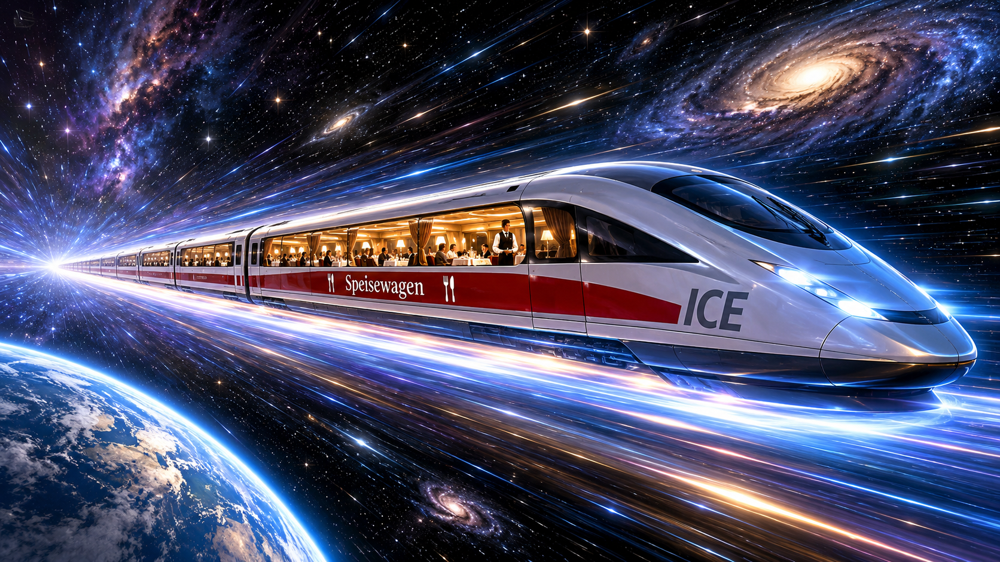

Es duftet! Ich sitze mit einem jüngeren Kollegen im ersten Zug nach Brüssel. Wir sind Programmierer und wollen zu einer ziemlich wichtigen Klimakonferenz. Unsere Plätze haben wir ganz hinten in einem hypermodernen Wagen und ich schaue in Fahrtrichtung. Es ist etwas kühl - die Klimaanlage ist wohl noch nicht richtig eingestellt. Aber es ist nicht nur frisch, sondern auch köstliche Aromen verbreiten sich mit der frostigen Luft. Im nächsten Wagen hat das Bordrestaurant seinen Betrieb aufgenommen und der Kaffeegeruch ist schwer zu ignorieren. Also begebe ich mich mit etwa 5 km/h in Richtung des vorderen Zugteils…
Der Zug fährt gleichmäßig und sehr langsam - etwa 20 km/h. Draußen am Bahnsteig steht eine junge Frau und scheint das Geschehen im Zug zu beobachten. Sie sieht mich mit 25 km/h dem köstlichen Duft entgegenstreben.
20 + 5 = 25. Geschwindigkeiten in derselben Richtung addieren sich. Interessant ist, dass man es auch anders sehen könnte: Die Beobachterin an der Bahnstrecke befindet sich nicht in Ruhe. Sie steht zwar felsenfest auf der Erde, aber unser Planet fliegt um die Sonne und die Sonne umkreist in weiter Bahn das Zentrum unserer Galaxis, die sich wiederum seit dem Urknall in einer ständigen Bewegung befindet. Wer weiß, vielleicht kompensieren mein Zug und mein eigener Gang in Richtung Kaffee ganz zufällig alle diese Bewegungen, und ich befinde mich in absoluter Ruhe?! Auf jeden Fall kann auch ich behaupten: Die Beobachterin bewegt sich einschließlich des Planeten mit 25 km/h auf mich zu und sie reist mit 20 km/h bezüglich des Zuges.
Halten wir fest: Die – in meiner Vorstellung – ebenfalls physikalisch interessierte Beobachterin und ich können uns nicht darauf einigen, wer sich von uns beiden bewegt und ob sich überhaupt einer von uns in Ruhe befindet. Konsens ist nur unsere Relativgeschwindigkeit! Ich schaue nach draußen und glaube, dass die junge Frau mich etwas irritiert ansieht.
Nun stelle ich mir vor, dass nicht ich durch den Zug eile. Ich (unten in der Abbildung der blaue Smiley) bleibe gemütlich sitzen und schicke meinen freundlichen und sportlicheren Mitreisenden (blauer Blitz) nach vorn zum Bordrestaurant.

Mr. Blitz läuft durch den Zugwagen.
Oben: meine Wahrnehmung im Zug,
Unten: Wahrnehmung der Beobachterin am Bahnsteig
die gestrichelten Linien zeigen die Position des Wagens, nachdem Mr. Blitz am Ende hinten angekommen ist.
Oben in der Grafik sieht man: Während mein Mitreisender von links nach rechts die Wagenlänge durchquert hat, bewegt sich die Beobachterin (rosa) am Bahnsteig eine Länge auf mich zu. Aus Sicht der Beobachterin (untere Grafik) hat mein Mitfahrer jedoch den längeren Weg zurückgelegt, weil sich in der Zeit seines Sprints bis zum Wagenende der ganze Zug um eine Entfernung nach vorne bewegt hat.
Die Beobachterin und ich können unsere jeweiligen Beobachtungen umrechnen:
Dabei kann leicht aus der Zuggeschwindigkeit und der benötigten Zeit berechnet werden.
, bzw.
Wir erhalten die sogenannte Galilei-Transformation
GT+
GT-
Plötzlich ertönt eine Durchsage. Stromausfall. Ein Umspannwerk muss repariert werden und wir dürfen uns auf einen mindestens einstündigen Aufenthalt einstellen. Mr. Blitz und ich steigen – mit drei dampfenden Kaffeebechern ausgestattet – auf den Bahnsteig. Die junge Frau lächelt und so wagen wir, ihr einen Kaffee anzubieten. Wenige Minuten später sitzen wir zu dritt an einem massiven Holztisch und blinzeln in die Morgensonne. Wir erzählen Sarah, so heißt die freundliche Beobachterin, von unseren Überlegungen und sie ist sofort angetan. Sie erzählt, dass sie Physik studiert. Sie hatte tatsächlich ganz ähnliche Gedanken im Kopf, als unser Zug eben vorbeirollte. Sarah holt Block und Stift aus ihrem Rucksack und beginnt sofort zu zeichnen...
Um die Position von Objekten im Raum anzugeben, nutzen wir ein 3D-Koordinatensystem.

Beschreibung des Ortes im Raum durch drei Koordinaten
Alle drei Achsen sind gleichberechtigt. Die Längeneinteilung auf allen Achsen is gleichmäßig. Das grüne Objekt bekommt die eindeutige Position (; ; ).
Um die Bewegung eines Objektes darzustellen, könnten wir einen Film erzeugen. Die Abbildung unten links deutet das an. Wollen wir die Zeit explizit in unser Koordinatensystem hinzunehmen, haben wir etwas unhandliche, schwierig zu zeichnende vier Dimensionen! Für eine solche statische Darstellung könnte man den 3D-Raum zusammenstauchen und eine vierte Achse einführen, um jedem Ereignis (ein Ereignis ist etwas, das an einem Ort zu einer Zeit passiert) eine Position (; ; ; ) in Raum und Zeit zu geben. Wir könnten die drei Raumdimensionen weiter zusammenklappen – siehe unten in der Mitte. Aber es geht auch viel einfacher. Da in unserem Kontext alles Wesentliche mit nur einer einzigen Raumdimension zu verstehen ist, lassen wir die - und -Dimensionen einfach weg (rechts in der Abbildung :-)

Ereignisse als grüne Punkte in Koordinatensystemen
Raumkoordinaten; Hinzunahme der Zeit; Reduktion auf eine Raum- und eine Zeitkoordinate
Wir benötigen hier übrigens kein rechtwinkliges Koordinatensystem. Wir lesen die -Koordinate und die Zeit eines Ereignisses in solchen schiefwinkligen Koordinatensystemen ab, indem wir parallel zu den Achsen wandern (Abbildung oben rechts).
In einem solchen -Koordinatensystem stellt sich die Bewegung eines Objektes als Kurve dar. Wenn die Kurve geradlinig ist, handelt es sich um eine Bewegung mit konstanter Geschwindigkeit, das heißt ohne Beschleunigung. Hier – zur Erwärmung – noch ein paar Beobachtungen:

| Links: Ereignisse an verschiedenen Orten, die auf einer zur -Achse parallelen Geraden verlaufen, finden gleichzeitig statt. | Mitte: Ein im betrachteten System ruhendes Objekt "bewegt" sich im Diagramm parallel zur Zeitachse. | Rechts: Hier sieht man Bewegungen von Objekten mit unterschiedlichen Geschwindigkeiten (je flacher der Anstieg, desto höher ist die Geschwindigkeit). Hier bewegen sich alle drei Objekte in unserem eindimensionalen Raum nach rechts, zu größer werdenden -Werten. |

| Links: Die zur -Achse parallele Bewegung entspricht einer unendlichen Geschwindigkeit. Die noch stärker abfallende Bewegung würde ein Objekt bedeuten, das sich in der Zeit rückwärts bewegt. Beides ist unmöglich (rot). Der grüne Pfeil hingegen stellt eine Bewegung nach links zu kleiner werdenden -Werten dar. | Mitte: Das linke Objekt bewegt sich beschleunigt, die Geschwindigkeit nimmt zu. Das rechte Objekt bremst (negative Beschleunigung). Die Geschwindigkeit nimmt ab. Beide Objekte bewegen sich nach rechts. | Rechts: Das linke Objekt hat an einer Stelle einen Anstieg, der eine unendliche Geschwindigkeit bedeutet. Das rechte Objekt reist nach dem Extrempunkt sogar rückwärts in der Zeit. Beides ist unmöglich. |
Sehen wir uns nun unten die Situation im Zug und gleichzeitig vom Standpunkt am Bahnsteig an. Sarah öffnet ihren Laptop und tippt ein paar Formeln in ein Python-Skript ein. Linien und Zahlen erscheinen. …Wir wählen die Achsen so, dass alle Ereignisse in beiden Koordinatensystemen an derselben Stelle abgebildet werden. Das rote Koordinatensystem mit den Achsen und ist das des Bahnsteigs. Das blaue Zug-Koordinatensystem hat die Achsen und . Die Raumachsen und beider Systeme fallen zusammen. In der Grafik unten überlagert die blaue -Achse die rote -Achse. Die Zeitachsen und sind zueinander gekippt, um die Relativgeschwindigkeit (20 km/h) der beiden Systeme auszugleichen. Die Zeitachse des Zuges stellt gleichzeitig im Bahnsteig-System die Linie der Ereignisse des Zuges an meiner Sitzposition dar. Den Ursprung wählen wir so, dass der Start von Mr. Blitz in beiden Fällen im Punkt (0,0) liegt.

Ort- und Zeit-Koordinaten der Ereignisse A und B
aus Sicht zweier zueinander bewegter Systeme
Wir stellen uns den Wagen extrem lang vor und betrachten die beiden Ereignisse
A = "Position von Mr. Blitz nach einer Stunde" und
B = "Position von Mr. Blitz nach zwei Stunden"
Wir lesen für beide Ereignisse die Werte ab:
A: ,
B: ,
Zur Probe vergewissern wir uns, dass die Galilei-Transformation (GT+ ) für Ereignis B korrekt dargestellt wird:
50 km = 10 km + 20 km/h * 2 h
Die Rückrechnung (GT- ) kann ebenfalls im Diagramm abgelesen werden:
10 km = 50 km - 20 km/h * 2 h
Für das Ereignis A gelten ebenfalls die Gleichungen. Wir haben zueinander passende Koordinatensysteme gezeichnet.
Da die Unterteilung der Zeitachsen so gewählt wurde, dass auf allen Parallelen zu und immer dieselben Werte stehen, gilt die bisher implizit gemachte Annahme, dass die Zeit in beiden Systemen gleich vergeht:
GT-t
Genau hier, im gleichen Vergehen der Zeit, liegt eine interessante Ungenauigkeit unserer bisherigen Vorstellungen von Raum und Zeit. Beeindruckt sehen wir zu der jungen Frau und Sarah beginnt zu erzählen:
Ende des 19. Jahrhunderts wurden mehrere Experimente zur Lichtgeschwindigkeit durchgeführt, die nahelegten, dass die Geschwindigkeit des Lichts nicht nur endlich, sondern auch immer gleich ist (Michelson-Morley-Experiment, 1887). Eigentlich wollte man einen absolut ruhenden Äther nachweisen, indem sich das Licht ausbreitet. Das hat einfach nicht geklappt. Einstein hat dann 1905 die ganze Äther-Theorie infrage gestellt und stattdessen die Konstanz der Lichtgeschwindigkeit zu einem Postulat erhoben. Egal, ob die Messung in einer schnell bewegten oder einer ruhenden Apparatur gemessen wird – es ergibt sich immer dasselbe Resultat von . Das ist extrem irritierend, denn eigentlich müsste sich ja die Geschwindigkeit der bewegten Messapparatur zur Lichtgeschwindigkeit addieren, wenn sich Licht und Apparat in dieselbe Richtung bewegen. Lasst uns diese Irritation mal richtig spüren:
Starten wir mit einem Gedankenexperiment: Nicht Mr. Blitz joggt durch den Zug, sondern ein Lichtteilchen. Und der Zug soll sich nicht nur mit 20 km/h, sondern mit einer sehr hohen Geschwindigkeit in der Größenordnung von etwa 20% der Lichtgeschwindigkeit bewegen. Ansonsten soll sich nichts verändern:

Ein Photon fliegt durch einen sehr schnellen Wagen
Wenn du hinten im Wagen sitzend eine Lampe einschaltest und ein Photon seinen Weg in Richtung Bordrestaurant beginnt, misst du für das Photon dieselbe Geschwindigkeit wie ich als Beobachterin draußen! Um diesen Effekt zu verstehen, müssen wir unsere Vorstellung von Raum und Zeit aufgeben. Schauen wir, was die konstante Lichtgeschwindigkeit für unsere Überlegungen bedeutet.
Wäre dein Zug super schnell, sagen wir 99% der Lichtgeschwindigkeit bezüglich der Erde, würde sich das Photon trotzdem mit gigantischen 300000 km/s von dir entfernen. Die Beobachterin sähe hingegen das Photon und dich mit fast derselben (ziemlich hohen) Geschwindigkeit bewegen. Wie kann das sein?
Geschwindigkeit ist Weg pro Zeit. Die Konstanz der Lichtgeschwindigkeit erzwingt also, dass sich Weg und/oder Zeit für mich im Zug irgendwie anders verhalten als für die Beobachterin an der Strecke. Spekulieren wir und versuchen – auf den Spuren Einsteins – eine Theorie zu entwickeln, wie sich Weg und Zeit verhalten könnten.
Sarah rekapituliert noch einmal (Abbildung unten): Für die Umrechnung von Ort und Zeit eines Ereignisses (grüner Punkt) zwischen zwei sich zueinander bewegenden Systemen lesen wir bisher die Werte in den beiden Systemen zugeordneten Koordinatensystemen (rot und blau) ab. Dabei sind die Ortsachsen und identisch. Wir nahmen die Lichtgeschwindigkeit als unendlich an. Ein Photon, das bei 0,0 startet, bewegt sich also entlang der -, bzw. -Achse (gelber Pfeil). Offenbar gilt diese Umrechnung recht gut für geringe Geschwindigkeiten zwischen den Systemen.

Wie verändern wir die Koordinatensysteme bei konstanter Lichtgeschwindigkeit?
Die Frage ist, wie wir die Konstanz der Lichtgeschwindigkeit nutzen, um auch für hohe Geschwindigkeiten korrekte Umrechnungen zu erhalten. Aus der Endlichkeit der Lichtgeschwindigkeit folgt sofort, dass der gelbe Pfeil nicht parallel zu und verlaufen kann. Wir sind frei in der Wahl der Einheiten für Zeit und Weg. Wählen wir die Zeit-Einheit so, dass die Lichtgeschwindigkeit genau 1 ergibt, z. B. Längeneinheit: Lichtjahre, Zeiteinheit: Jahre. Damit gilt
bzw.
oder
für die Bewegung von Lichtteilchen.
Damit muss die Bahn eines Photons, das bei 0,0 startet, exakt die Diagonale zwischen den beiden gleichaufgelösten Achsen sein!

Die Bahn des Photons bildet die Diagonale ( )
Mr. Blitz schaut auf die Diagramme und murmelt: Die Lichtgeschwindigkeit scheint nicht nur endlich und konstant, sondern auch eine Höchstgeschwindigkeit zu sein, richtig? Sarah nickt begeistert. Ganz genau: Egal wie schnell der Zug fährt. Du kannst im Inneren des unbeschleunigten Zuges auf keine Weise feststellen, dass sich der Zug überhaupt bewegt. (Das nennt man Relativitätsprinzip.) Auch ein von deinem Platz nach vorn ausgesandtes Photon verhält sich wie immer: Es fliegt aus deiner Sicht mit in Richtung Bordrestaurant. Vom Bahnsteig aus betrachtet sieht man das Photon auch mit fliegen und am Bordrestaurant ankommen. Du bleibst dabei hinter dem Lichtteilchen zurück. Du fährst also von außen betrachtet langsamer als …
Wenn gar nichts schneller als das Licht beschleunigt werden kann, heißt das auch, dass man nur Ereignisse beeinflussen kann, die man langsamer als ein Photon erreichen kann. Im untenstehenden Diagramm ist alles, was im oberen Lichtkegel liegt, vom Ursprung aus erreichbar. Umgekehrt können den Ursprung nur Ereignisse beeinflussen, die im unteren Lichtkegel stattfinden. Sarah schmunzelt. Das ist übrigens eines meiner Lieblingsdiagramme - danke für die Frage nach der Höchstgeschwindigkeit, Mr. Blitz.

Aber schauen wir, was es uns nutzt, die Einheiten für Weg und Zeit an der Lichtgeschwindigkeit auszurichten:
Die Eigenschaft, dass die stets konstante Lichtgeschwindigkeit die Diagonale zwischen den Achsen darstellt, muss auch für jedes andere -System gelten, das sich mit konstanter Geschwindigkeit zum -System bewegt.
Mit der gemeinsamen Diagonale haben wir eine gute Möglichkeit, Koordinatensysteme aufeinander abzubilden. Die Bahnen von Teilchen mit Lichtgeschwindigkeit (die gelben Diagonalen) müssen aufeinander gedreht werden. Die Lichtgeschwindigkeit bildet die Symmetrie-Linie zwischen den Achsen. und stehen immer zueinander im selben Winkel wie und . Sehr interessant ist, dass die Raumachsen im Gegensatz zur Galilei-Transformation nicht zusammenfallen können. Das bedeutet, dass nicht nur gilt, sondern dass sich auch die Zeit in beiden Systemen unterschiedlich verhalten muss:

Ausrichten der Koordinatensysteme nach der gemeinsamen gelben Diagonalen
Offen bleiben folgende Fragen: Die Größe des Winkels und die relative Auflösung der Achsen (Bild oben rechts) müssen geklärt werden. Betrachten wir zunächst die Verkippung der Ortsachse:

Wie kann von gelöst werden?
Links ist die klassische Galilei-Transformation mit den zusammenfallenden x-Achsen zu sehen. Wie könnte man rein technisch zu einer Situation wie rechts dargestellt kommen?
Mr. Blitz wirft Sarah einen skeptischen Blick zu: ‘rein technisch’? Ist das noch Wissenschaft? Sarah lacht. Aber ja! So ist es immer in der Naturwissenschaft. Wir beginnen mit einer deprimierenden Beobachtung, die nicht zu unseren aktuellen Gleichungen passt. Dann versuchen wir die Gleichungen so zu verändern, dass sie alle Effekte abdecken. Das Alte stellt sich dann oft als Näherungslösung der neuen Formeln heraus. Letztlich muss man natürlich in Experimenten prüfen, ob sich die Natur so verhält, wie es unsere neuen Gleichungen beschreiben.
Während Mr. Blitz und ich noch grübeln, fährt Sarah ungerührt und voller Tatendrang fort, die bisherigen Wahrheiten kreativ zu verändern:
Für die Verdrehung der Zeitachse ist das Produkt in verantwortlich. Verdrehen wir analog , indem wir bei der Zeit subtrahieren:
Links:
und
(Galileitransformation GT+ und GT-t)
Rechts:
und
(Vermutung zur Herstellung der Symmetrie)
Das klappt! Die symmetrische Achsenverdrehung können wir so erreichen. Allerdings gibt es ein Problem mit der Auflösung der - und -Achsen. Die Rücktransformation (blau nach rot: und ) bildet nicht dieselben Werte aufeinander ab. Hier ein Beispiel für die halbe Lichtgeschwindigkeit : Transformieren wir mit den vermuteten Gleichungen ein Ereignis hin und zurück. Beginnen wir mit dem Ort auf der roten -Achse:
( , ) → ( , ) → ( , ).
Die Zeiten und stimmen überein. Das ist gut. Wenn Hin- und Rücktransformation zueinander passen würden, müsste auch mit übereinstimmen. Um das Problem zu visualisieren, zeichnen wir in das rote System graue Pfade von () über den entsprechenden Punkt auf der blauen Achse nach () (wieder im roten System) ein. Start- und Endpunkte der grauen Pfade müssten aufeinander zu liegen kommen, was sie aber nicht tun:

Hin- und Rücktransformation passen noch nicht ( )
Da das fehlerhafte Verhalten für Ort und Zeit gleich ist und wie ein Zoom bzw. eine Skalierung erscheint, versuchen wir es mit einem einfachen Skalierungsfaktor , den wir beiden Gleichungen mitgeben.
Rechts:
und
(verbesserte Vermutung)
Wählen wir willkürlich als 1.1, erhalten wir tatsächlich ein besseres Ergebnis. Die grauen Pfeilspitzen nähern sich dem Startpunkt an:

Hin- und Rücktransformation passen etwas besser ( )
Bestimmen wir nun präzise. Betrachten wir dazu ein beliebiges Ereignis . Die Transformation erzeugt das Ereignis . Wird die Rücktransformation auf angewendet, muss wieder herauskommen. Das wollen wir ausnutzen.

Mr. Blitz schaut nachdenklich auf die Gleichungen: Eigentlich lauten die Hin- und Rücktransformationen genau gleich, nur die Geschwindigkeit hat ein entgegengesetztes Vorzeichen, je nachdem, ob es vorwärts oder rückwärts auf der x-Achse geht. Sarah bestätigt: Scharfes Auge! Ja, es soll keine Unterschiede zwischen der Hin- und der Rücktransformation geben. Man kann ja nicht sagen, wer sich eigentlich bewegt. Die Richtung der Transformation ergibt sich nur aus der Richtung der Geschwindigkeit. Lasst uns sehen, ob das funktioniert…
Setzen wir also die Transformationsgleichungen in eine Gleichung der Rücktransformation
ein und eliminieren so und
Fassen wir zusammen (Ausklammern von , Einmultiplizieren von )
Die Terme heben sich auf und wir beseitigen so die Zeit :
Ausklammern von und Teilen beider Seiten durch entfernt auch den Weg:
Nach umgestellt erhalten wir den Faktor , der nur von abhängt:
Wir haben es geschafft!
Mit diesem Ergebnis entspricht das Koordinatensystem den Zielen. Wir erhalten Symmetrie in und beide Richtungen der Transformationen von Raum und Zeit funktionieren. Die grauen Pfeile bilden sich aufeinander ab:

Hin- und Rücktransformation funktionieren (korrektes )
Tatsächlich wurde genau diese Theorie im Experiment bestätigt und bildet eine Grundlage der heutigen Physik! Eigentlich sind wir fertig. Der Vollständigkeit halber bleibt zu überlegen, wie es sich verhält, wenn wir die Einheiten nicht so wählen, dass gilt.
Das folgende Diagramm zeigt die Asymmetrie, die wir erreichen müssen, wenn die Lichtgeschwindigkeit wieder als Variable eingeführt wird und keine Symmetrieachse mehr darstellt:

Ist die Lichtgeschwindigkeit nicht 1 verschwindet die Symmetrie im Diagramm
Wenn nicht mehr Symmetrieachse ist, müssen wir auch die Gleichungssymmetrie des bisherigen Ansatzes und aufbrechen. Die Zeit-Gleichung weist übrigens auch noch ein Einheitenproblem auf. ist einheitenlos und so müsste eine Zeit ergeben. Jedoch ergibt das Produkt keine Zeit! Vielleicht kann ein einseitig eingeführter Faktor dieses Problem lösen und gleichzeitig die nötige Asymmetrie herstellen? Da eingeführt wird, müssen wir auch das bisherige neu betrachten. Es dürfte von abhängig sein. Nutzen wir zur Unterscheidung statt das griechische Symbol . Nehmen wir insgesamt folgenden Ansatz mit den beiden unbekannten und :
und bzw. für die Rückrichtung der Transformation:
und
Wie gesagt: Auch der symmetrische Faktor (bisher ) verändert sich, wenn wir einführen. Aus wird:
Die Herleitung für führen wir wie oben:…
Mr. Blitz stöhnt leise. Sarah beruhigt ihn: Keine Sorge, das Schwierigste ist wirklich erledigt. Wir gehen genau dieselben Schritte wie eben beim Berechnen von und schleppen nur zusätzlich das mit.
Setzen wir die Transformationsgleichungen in eine Gleichung der Rücktransformation
ein und eliminieren so und
Nach umgestellt, erhalten wir den Faktor , der von und abhängt:
Mr. Blitz trinkt seinen letzten Schluck Kaffee und zeigt wieder volle Aufmerksamkeit: Ok. Das ging wirklich leicht. Und nun müssen wir nur noch das ominöse berechnen, stimmt’s?
Ja, genau, sagt Sarah. Dazu betrachten wir ein Objekt, dessen Verhalten wir bezüglich , , und genau kennen, ein Photon!
Die Lichtgeschwindigkeit ist konstant. Sie lässt sich also in beiden Systemen als
und
beschreiben. Für die Bewegung eines Photons gilt demnach:
Setzen wir auf der rechten Seite für und den oben gewählten Ansatz ein.
kürzt sich weg. Wir wandeln die Verhältnisgleichung in die Produktform um:
Wir setzen bzw. ein:
Damit erhalten wir die typische Formulierung der sogenannten Lorentz-Transformation:
L-x
L-t
mit
Sarah zeichnet eine Box um die letzten drei Zeilen. Dann blickt sie von ihrem Notizblock auf und schaut erst Mr. Blitz und dann mich fragend an. Aha, ich verstehe Sarahs Blick. Es ist wohl Zeit für ein Feedback an eine engagierte Dozentin! Ich setze mich auf und fasse das Gelernte zusammen: Ein Ereignis hat in meinem System die Koordinaten und . Mit der Lorentz-Transformation kann ich ausrechnen, welche Koordinaten und dasselbe Ereignis in einem System hat, das sich im Verhältnis zu mir mit großer Geschwindigkeit bewegt. Sarah ist sichtlich erleichtert und fährt fort: Bevor wir schauen, was diese Gleichungen für unser Weltbild bedeuten, können wir noch prüfen, ob die alte Theorie eine Näherungslösung ist. Ja, das ist sie: Für kleine geht gegen 1. In der Zeitgleichung L-t geht gegen 0. Wir sehen, dass die Galilei-Transformation für geringe Geschwindigkeiten, wie in unserem Zug-Beispiel, tatsächlich eine sehr gute Approximation darstellt. Bei 5 km/h und 20 km/h betragen die Abweichungen weniger als .
Hier sehen wir die Anwendung der Lorentz-Transformation mit zwei Systemen und einem Ereignis A:

Ablesen von Ort und Zeit für dasselbe Ereignis A in beiden Systemen
Interessant sind die Linien, auf denen gleichzeitige Ereignisse im jeweiligen System liegen. Diese verlaufen parallel zur jeweiligen -Achse, denn dort ändert sich die Zeit nicht:

Linien gleichzeitiger Ereignisse im roten und im blauen System
Mit der Konstanz der Lichtgeschwindigkeit und dem daraus resultierenden Verdrehen der x-Achsen wird Gleichzeitigkeit ein relatives Phänomen. Dinge, die in dem einen System gleichzeitig geschehen, passieren im anderen Bezugssystem nicht zur selben Zeit!
Schauen wir auf die Schnittpunkte der Gleichzeitigkeitslinien mit den Zeitachsen: Zeigt die Uhr im roten System 10, liest man im blauen System weniger als 10 ab. Zeigt die Uhr im blauen System 10, liest man auf der roten Zeitachse weniger als 10. Von beiden Systemen aus betrachtet, laufen die Uhren im jeweils anderen System langsamer ab!

Zeigt die Uhr 10, ist es auf der Gegenseite noch nicht 10
Mr. Blitz schüttelt irritiert den Kopf: Sowohl ein Raumfahrer als auch ein Erdenbewohner sehen die Zeit im jeweils anderen System langsamer vergehen. Im Film “Interstellar“ ist aber der reisende Vater am Ende erheblich weniger gealtert als seine Tochter?!
Ja, stimme ich aufgeregt zu. In einer Kinderzeitschrift (“Frösi“ hieß sie) habe ich vor 40 Jahren vom Zwillingsparadoxon gelesen. Damals wollte ich deshalb sogar Physiker werden, so faszinierend fand ich das: Ein Zwilling geht auf eine interstellare Reise und kommt jünger als sein Bruder, der auf der Erde wartete, zurück. Wie ist das damit vereinbar, dass in beiden Systemen die jeweils andere Uhr langsamer geht?
Sarah lehnt sich vergnügt zurück und gibt uns etwas Zeit zum Nachdenken. Dann erklärt sie: Die Lösung für das klassische Zwillingsparadoxon liegt darin, dass der reisende Zwilling mit unterschiedlich hoher Geschwindigkeit reist. Er startet auf der Erde und beschleunigt und bremst dann im Laufe seiner Reise stark. Zum Schluss - beim Uhrenvergleich - hat er wieder dieselbe Geschwindigkeit wie sein Bruder auf der Erde. Die bisherigen Betrachtungen beziehen sich jedoch nur auf nicht beschleunigte Systeme! Schauen wir uns das mit der Beschleunigung mal an…
Da ertönt die Durchsage des Bahnhofsprechers: Der verspätete Zug nach Brüssel fährt in fünf Minuten weiter von Gleis 1. Bitte sofort einsteigen! Vielen Dank für Ihre Geduld! Es besteht Einfahrt auf Gleis 3: der Regionalexpress nach Mannheim.
Oh - der Zug nach Mannheim ist meiner, sagt Sarah. Habt eine gute Reise! Ich programmiere Euch nachher mal den Zwillingsflug und schicke ihn per Mail!
Rasch gebe ich Sarah noch meine Visitenkarte.
Ein paar Minuten später sitzen Mr. Blitz und ich wieder in unserem Zug auf dem Weg in die Hauptstadt Europas. Direkt auf dem Nachbargleis steht der Zug nach Mannheim. Er ist nicht sehr voll. Ich versuche zu lesen und Mr. Blitz schaut, ob er Sarah im Nachbarzug sehen kann. Das wäre ein zu großer Zufall, wenn ihr Platz genau auf unserer Höhe wäre. Als wir losfahren, ziehen wir langsam schneller werdend Fenster für Fenster am Regionalexpress vorbei. Für Mr. Blitz gestaltet sich die Suche nach Sarah dadurch deutlich leichter. Da ist sie! Sie schaut tatsächlich herüber und winkt. Plötzlich ruckelt unser Zug erneut. Wir schauen zum Bahnsteig und sehen, dass wir noch gar nicht losgefahren sind! Wir stehen immer noch. Offenbar wird gerade ein neuer Triebwagen angekoppelt. Mr. Blitz und ich schauen uns an und müssen grinsen: Sarahs Zug fuhr aus dem Bahnhof und wir standen die ganze Zeit! Wir glaubten nur wegen des ersten Ruckelns, dass unser Zug in Bewegung käme. Diese spontane Widerlegung der Annahme, dass völlig klar sei, was Ruhe ist, passte wirklich zu gut zu diesem merkwürdigen Vormittag.
Am Abend kommen wir erschöpft in unser Hotelzimmer - der erste zähe Nachmittag der Klimaschutz-Konferenz ist endlich vorbei - finden wir Sarahs E-Mail und alle Müdigkeit ist verflogen:
Lieber Henry,
hattet ihr einen guten Tag?
Schauen wir mal, wie eine wirklich schnelle Bewegung mit einem Raumschiff aussehen könnte und wie sich die Zeit in beschleunigten Systemen verhält. In der Anlage findet ihr das Python-Programm, mit dem ich die Diagramme erzeugt habe. Ihr könnt es einfach ausführen. Ich habe aber auch Screenshots gemacht. Das genügt sicher, um die Effekte zu verstehen.
Hier ein Flug zu einem „nahen“ Stern und zurück zur Erde:

Flugphasen (gepunktete Kurve) eines Raumschiffs in Raum und Zeit
von der Erde zu einem Stern und zurück
Das rote Ort-Zeit-System sei das Koordinatensystem, in dem sich die Erde in Ruhe befindet. Da es keine absolute Ruhe gibt, ist die Neigung der Achsen willkürlich gewählt. Die gepunktete Kurve stellt von unten nach oben die Flugbahn dar. Es gibt vier beschleunigte Flugphasen, die durch dunkelblaue antriebslose Gleitphasen verbunden sind.
Grün: Zum Zeitpunkt 0 bricht ein Zwillingsbruder auf und beschleunigt mit einem angenehmen Betrag von 9.81 m/(s*s). Diese Beschleunigung fühlt sich genau wie die Erdanziehung an. Übrigens ist das nur die Beschleunigung, wie sie der Reisende erlebt. Von der Erde aus betrachtet nimmt die Beschleunigung im Laufe der Zeit ab.
Blau1: Hat das Raumschiff die knappe Hälfte der Entfernung zum Zielstern erreicht, werden die Triebwerke ausgeschaltet. Das Schiff schwebt antriebslos mit maximaler Geschwindigkeit in Richtung Ziel. Das hellblaue Achs-System ist ein Koordinatensystem, in dem sich das Raumschiff in dieser Phase in Ruhe befindet: Die -Achse ist parallel zu der ersten blaupunktierten Linie. Dieser Abschnitt ist perfekt gerade und hat keine Krümmung, weil die Geschwindigkeit, obwohl sie bezüglich der Erde sehr hoch ist, sich nicht ändert. Das Schiff erlebt in dieser antriebslosen Phase Schwerelosigkeit. Das Raumschiff wird nun so gedreht, dass die Düsen nach vorn zeigen. Dann beginnt die Bremsphase:
Pink: Das Raumschiff wird mit derselben, aber nun entgegengesetzten Kraft, mit der es zuvor beschleunigt wurde, abgebremst. Durch die neue Ausrichtung des Schiffes, mit den Düsen zum Ziel, gibt es im Raumschiff genau die gleiche Stärke und Richtung einer scheinbaren Schwerkraft wie in der grünen Flugphase. Sehr komfortabel ist das!

Die ersten drei Flugphasen
Blau2: Nun ist das Raumschiff endlich am Ziel. Die Triebwerke werden abgestellt. hat seinen Maximalwert erreicht. Der Kurvenabschnitt ist parallel zur roten -Achse. Das bedeutet, dass der Zielstern mit etwa derselben Geschwindigkeit durchs All fliegt wie die Erde. Die Relativgeschwindigkeit Sonne/Zielstern ist etwa 0. Der Zwilling erforscht begeistert das fremde Sonnensystem und schließt mit den Einheimischen Freundschaft. Wenn er nicht gerade der Schwerkraft der fremden Planeten ausgesetzt ist, bewegt er sich schwerelos.
Türkis: Der Rückflug beginnt wieder mit einer Beschleunigung, die genauso eingestellt wird, dass sie die Erdanziehung ersetzt. So werden Knochenschwund und Muskelverlust verhindert. Eine stärkere Beschleunigung wäre wiederum sehr anstrengend oder sogar ungesund.
Blau3: Wieder ist bezüglich des Erdsystems die maximale Geschwindigkeit erreicht. Das Schiff wird erneut gewendet, sodass die Triebwerke in Richtung Heimat zeigen.
Orange: Die abschließende Bremsphase bringt das Raumschiff wieder zur Erde ( ). Im Raumschiff herrscht angenehme Pseudo-Schwerkraft. Die Kurve im Diagramm schmiegt sich allmählich an die -Achse an. Das heißt, wir enden mit einer Relativgeschwindigkeit von 0 bezüglich der durchs Weltall rasenden Erde. Gut so! Das wird eine sanfte Landung.
Doch wie verhält es sich während dieses Fluges mit der Zeit im Raumschiff und auf der Erde?
Stellen wir uns vor, auf der Erde wird während der kompletten Reise ein Film gedreht. Dieser wird per Funk ins Weltall ausgestrahlt und vom Raumschiff empfangen. Stellen wir uns außerdem vor, dass auch im Raumschiff ein Film aufgenommen und an die Erde geschickt wird. Angenommen, man würde auf den Filmen jeweils eine Uhr sehen? Wie würde diese gehen?
Unten sehen wir Diagramme zu den beiden Filmen. Die Balken stellen die Differenz der eigenen Uhrzeit zur Uhrzeit der Gegenseite dar. Man sieht, dass die Uhren nicht synchron laufen. Andernfalls gäbe es keine Balken. Abnehmende Balken bedeuten Zeitlupe. Zunehmende Balken bedeuten Zeitraffer. Sind benachbarte Balken gleich lang, läuft die Zeit gleich ab, aber es gibt eine gewisse Differenz in der angezeigten Uhrzeit.

horizontale Achse: eigene Zeit
farbige Balken: andere Uhrzeit minus eigene Uhrzeit
oben: Erde blickt auf das Raumschiff
unten: Raumschiff blickt auf die Erde
Oben ist dargestellt, wie der Film, den die Erde vom Raumschiff empfangen hat, aussieht. Je steiler der Abstieg der Balken ist, desto stärker ist die Zeitlupe. In der mittleren dunkelblauen Flugphase befindet sich das Raumschiff beim Zielstern. Die Uhren laufen in dieser Phase gleich, weil die Relativgeschwindigkeit 0 ist. Allerdings zeigt die Raumschiffuhr eine frühere Zeit an als die Erduhr. Die Balken ragen nach unten, ändern aber ihre Länge nicht. In den anderen beiden blauen Phasen fliegt das Raumschiff mit maximaler Geschwindigkeit. Der Abstieg der Balken (also die Zeitlupe) ist dort am stärksten. Die Ereignisse an Bord erscheinen in diesen Flugphasen stark verlangsamt. Insgesamt zeigt die Uhr des Reisenden bei der Rückkehr auf die Erde weniger verstrichene Zeit an. Der reisende Zwilling ist am Ende jünger als sein Bruder auf der Erde!
Unten sieht der Raumfahrer, was auf der Erde während seines Fluges geschieht. Anfangs sieht auch er die Ereignisse auf der Erde in Zeitlupe ablaufen. Doch während der ersten Abbremsphase (pink) kehren sich die Dinge um: Aus der Zeitlupe wird ein Zeitraffer. In der zweiten Hälfte der pinken Abbremsphase überkompensiert der Zeitraffer sogar die vorangegangene Zeitlupe. Es gibt einen Moment, in dem beide Uhren die gleiche Zeit anzeigen. Das ist der Nulldurchgang der Balken. Danach gehen die Zeitbalken nach oben, d.h. die Zeit auf der Erde ist ab diesem Punkt weiter fortgeschritten als im Raumschiff und man sieht die Uhrzeit weiter zurückbleiben (Zeitraffer). Am Zielstern (mittlerer dunkelblauer Bereich) laufen die Uhren gleich schnell, aber die Erduhr zeigt eine spätere Uhrzeit an als die Borduhr des Raumschiffs. Der Rückflug beginnt mit einem Zeitraffer und setzt sich beim Wendemanöver als Zeitlupe fort.
Bemerkung zur Übertragung der Filme per Funk: Da das Funksignal eine immer größere Strecke zurücklegen muss und dies nur mit Lichtgeschwindigkeit bewältigen kann, empfängt man einen verzerrten Film (Dopplereffekt). Man schaut mit wachsender Entfernung zum Sender immer weiter in die Vergangenheit. Da die Entfernungen und damit die Laufzeiten stets bekannt sind, können die Filme am Reiseende um diesen Laufzeiteffekt korrigiert werden. In den Diagrammen sind die Zeitdifferenzen entsprechend korrigiert dargestellt.
Übrigens erleben die Raumfahrer im Film “Interstellar” im Wesentlichen ganz andere Effekte. Es hat etwas mit einem Schwarzen Loch und der Wirkung von Masse zu tun! Darüber sprechen wir später einmal ;-)
Habt noch einen guten Abend und eine erfolgreiche Konferenz!
Eure Sarah
PS: Viele Grüße auch an Mr. Blitz! Kannst Du mir vielleicht auch seine E-Mail-Adresse funken?
Mr. Blitz und ich beugen uns lange über Sarahs E-Mail. Heute Vormittag hatten wir nur über konstante Geschwindigkeiten gesprochen. Sarah hatte uns mittels der Gleichzeitigkeitslinien erläutert, dass bei konstanter Geschwindigkeit jeder die jeweils andere Uhr in Zeitlupe sieht. Die erste und die letzte dunkelblaue Flugphase sind dafür Beispiele: Beide Filme laufen in diesen Abschnitten für den entfernten Beobachter gleichermaßen in Zeitlupe ab. Befinden sich die Systeme zueinander in Ruhe, wie in der mittleren dunkelblauen Flugphase, laufen die Uhren im selben Takt. Erst die Beschleunigung scheint den Unterschied zu machen. Sie erzeugt Zeitraffer und letztlich das Zwillingsparadoxon.
Dann verfassen wir mit geröteten Augen die Antwort:
Liebe Sarah,
Die Konferenz war bisher nicht sehr angenehm. So viele treten auf die Bremse! Hoffentlich wird es morgen besser. Aber lass uns von etwas Erfreulichem reden:
Danke, danke für den inspirierenden Morgen und deine irre E-Mail! Oh, wie gern würden wir deine programmierte Reise selbst erleben und die Filme sehen!
Wir haben wirklich viel verstanden. Besonders gefallen uns die Balkendiagramme. Man sieht schön, dass der Film, den die Erde erhält, deutlich kürzer ist. Auf dem Raumschiff ist insgesamt genau so viel Zeit weniger vergangen wie der letzte Balken lang ist. Korrekt?
Zwei Fragen haben wir noch:
Im Film, den die Erde empfängt, gibt es ein paar Knicke. Die Beschleunigung ändert die Geschwindigkeiten aber nur allmählich. Wir hätten erwartet, dass sich dann auch die Zeit (Hüllkurve der Balken) immer nur knickfrei verändert!?
In den Formeln der Lorentztransformation gibt es gar keine Beschleunigung. Wie rechnest Du die Zeitkurven aus?
Noch einen schönen Abend und lass dir ruhig Zeit mit den Antworten!
Mr. Blitz & Henry
Mr. Blitz ist schon ins Bett gegangen, als der Rechner nochmal piept und Sarahs Antwort aufpoppt:
He he, ihr zwei Forscher!
Ihr habt eine gute physikalische Intuition. Ja, die Filme haben unterschiedliche Längen. Genau wie ihr es schreibt. Und tatsächlich kann man die Bewegungsgleichungen aus der Lorentztransformation ableiten: Beschleunigung ist die Änderung der Geschwindigkeit und Geschwindigkeit ist wiederum die zeitliche Veränderung des Ortes. Falls ihr euch noch an euer Schul-Mathe erinnert: Das sind Ableitungen! Umgekehrt kann man durch Integration Zeiten und Orte aus der Beschleunigung herleiten… Die Ergebnisse der Integration seht ihr im Python-Code, die Herleitung ist aber nicht ganz leicht, weil die Beschleunigung nur im System des Raumschiffs konstant ist.
Wo im unteren Film der Erde (vom Raumfahrer empfangen) die Beschleunigungen einsetzen oder enden, bildet die Hüllkurve der Balken tatsächlich Knicke. Das liegt daran, dass die Beschleunigung immer ganz plötzlich einsetzt: von 0 auf 9.81 m/s², ohne Übergang. Das geht eigentlich nicht. Würde man auch die Beschleunigung langsam steigern, also die Triebwerke kontinuierlich hochfahren, würden die Knicke verschwinden…
BTW: Wo wir schon bei der Kurvendiskussion sind: Die Hüllkurven der Balkendiagramme starten und enden immer perfekt horizontal, da sich der Uhrentakt bei Start und Landung angleichen muss, weil die Relativgeschwindigkeit langsam gegen 0 geht.
Und noch eins: Man könnte annehmen, dass die Beschleunigung die Ursache für das Zwillingsparadoxon ist. Aber das ist nicht ganz richtig. Es geht auch ganz ohne Beschleunigung. Hier noch ein letztes Gedankenexperiment für heute:
Es gibt zwei Außerirdische A und B, die mit hoher konstanter Geschwindigkeit in entgegengesetzter Richtung auf der -Achse unterwegs sind. A fliegt an der Erde vorbei und stellt dabei seine Uhr auf 0. Auch auf der Erde stellt genau in diesem Moment jemand eine Uhr auf 0. Als viel später A an B vorbeifliegt, stellt B seine Uhr auf A's aktuelle Zeit, sagen wir genau 100 Tage. Als dann B an der Erde vorbeifliegt, zeigt seine Uhr 200 Tage an. Die Uhr der Erde zeigt aber bereits 210 Tage seit dem Vorbeiflug von A an!

Die Außerirdischen A und B begegnen sich am Schnittpunkt der grauen Pfeile. B stellt dort die eigene Uhr auf die Zeit von A.
Der grüne, geknickte Pfad ist länger als der gelbe. Auf geraden Pfaden (Weltlinien) vergeht die Zeit am schnellsten.
Damit ein einzelner Reisender unterschiedliche Geschwindigkeiten erreichen kann, benötigt er tatsächlich eine Beschleunigung.
So nun muss ich aber wirklich mal schlafen. Macht’s gut und rettet morgen mal schön das Klima ;-)!!
Eure Sarah
Ich schicke noch eine kurze Antwort.
Danke Sarah!
Das sind super Erklärungen. Aus der Konstanz der Lichtgeschwindigkeit und dem Relativitätsprinzip („man kann nicht sagen, wer sich bewegt“) hast Du eine so „absolut“ spektakuläre Theorie abgeleitet! Wirklich beeindruckend. Da wollen wir morgen mal sehen, ob wir nicht ein wenig helfen können, das „relativ“ leicht zu verstehende Problem der Weltrettung durch erneuerbare Energie zu erhellen ;-)
Einstweilen: Gute Nacht!
Dein Henry
PS: Übrigens fragte sich vorhin Mr. Blitz, was Du wohl so am Wochenende vorhast? Ich hab ihm deine E-Mail-Adresse gegeben. Ha ha!
Oliver Bringmann, 2026